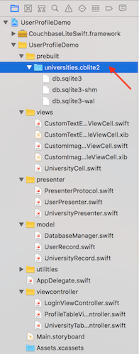
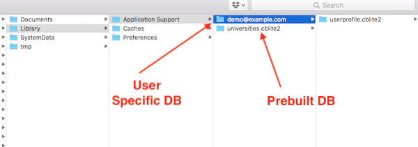

Introduction
Couchbase Lite 2.0 brings powerful querying and Full-Text-Search(FTS) capabilties to the edge. The new query interface is based on N1QL, Couchbase’s declarative query language that extends SQL for JSON. If you are familiar with SQL, you will feel right at home with the semantics of the new API. The query API is designed using the Fluent API Design Pattern, and it uses method cascading to read to like a Domain Specific Language (DSL). This makes the interface very intuitive and easy to understand.
Couchbase Lite can be used as a standalone embedded database within your mobile app.
This tutorial will walk through a simple swift app that will
-
Demonstrate how you can bundle, load and use a prebuilt instance of Couchbase Lite 2.0
-
Introduce you to the basics of the
QueryBuilderinterface
You can learn more about Couchbase Mobile here
Prerequisites
This tutorial assumes familiarity with building swift apps with Xcode and with the basics of Couchbase Lite
-
If you are unfamiliar with the basics of Couchbase Lite, it is recommended that you walk through the Fundamentals Tutorial on using Couchbase Lite 2.0 as a standalone database
-
iOS (Xcode 9.3+) Download latest version from the Mac App Store
-
git (Optional) This is required if you would prefer to pull the source code from GitHub repo.
-
Create a free github account if you don’t already have one
-
git can be downloaded from git-scm.org
-
App Overview
We will be working with a very simple "User Profile" app. If you had walked through the Fundamentals tutorial, you would quickly realize that this version extends the functionality introduced in the version introduced in that tutorial.
This app does the following
-
Allows users to log in and create or update his/her user profile information. You could do that in the Fundamentals tutorial
-
As part of profile information, users can now selecting a "university" from a list of possible options
The list of matching univerisities is queried (using the new Query API) from a local prebuilt "University" Couchbase Lite Database that is bundled in the app. The user profile information is persisted as a Document in the local Couchbase Lite Database. So subsquently, when the user logs out and logs back in again, the profile information is loaded from the Database.

Installation
Fetching App Source Code
Option 1 : Git Clone
-
Clone the query branch of the
User Profile Demoproject from GitHub. Type the following command in your terminalgit clone -b query https://github.com/couchbaselabs/userprofile-couchbase-mobile.git
Option 2 : Download .zip
-
Download the
User Profile Demoproject from here
Installing Couchbase Lite Framework
-
Next, we will download the Couchbase Lite 2.0 framework. The Couchbase Lite iOS framework is distributed via Cocoapods, Carthage or you can download the pre-built framework. In our example, we will be downloading the pre-built version of the framework. For this, do the following
cd /path/to/UserProfileDemo/content/modules/userprofile/examples sh install_9.sh
Now, let’s verify the installation
Try it Out
-
Open the
UserProfileDemo.xcodeproj. The project would be located at/path/to/UserProfileDemo/content/modules/userprofile/examplesopen UserProfileDemo.xcodeproj -
Build and run the project using the simulator in Xcode. While you can run the app on a real device, we recommend the Simulator so you can see the debug logs in the output console.
-
Verify that you see the login screen

Data Model
Couchbase Lite is a JSON Document Store. A Document is a logical collection of named fields and values.The values are any valid JSON types. In addition to the standard JSON types, Couchbase Lite supports some special types like Date and Blob.
While it is not required or enforced, it is a recommended practice to include a "type" property that can serve as a namespace for related.
The "User Profile" Document
The app deals with a single Document with a "type" property of "user". The document ID is of the form "user::<email>". An example of a document would be
{
"type":"user",
"name":"Jane Doe",
"email":"jame.doe@earth.org",
"address":"101 Main Street",
"image":CBLBlob (image/jpg),
"university":"Rensselaer Polytechnic"
}UserRecord
The "user" Document is encoded to a native struct named UserRecord.
let kUserRecordDocumentType = "user"
typealias ExtendedData = [[String:Any]]
struct UserRecord : CustomStringConvertible{
let type = kUserRecordDocumentType
var name:String?
var email:String?
var address:String?
var imageData:Data?
var university:String?
var extended:ExtendedData? // future
var description: String {
return "name = \(String(describing: name)), email = \(String(describing: email)), address = \(String(describing: address)), imageData = \(imageData)"
}
}The "University" Document
The app comes bundled with a collection of Documents of type "university". Each Document represents a university.
{
"type":"university","web_pages": [
"http://www.rpi.edu/"
],
"name": "Rensselaer Polytechnic Institute",
"alpha_two_code": "US",
"state-province": null,
"domains": [
"rpi.edu"
],
"country": "United States"
}UniversityRecord
The "university" Document is encoded to a native struct named UniversityRecord.
typealias Universities = [UniversityRecord]
// Native object
struct UniversityRecord : CustomStringConvertible{
var alphaTwoCode:String?
var country:String?
var domains:[String]?
var name:String?
var webPages:[String]?
var description: String {
return "name = \(String(describing: name)), country = \(String(describing: country)), domains = \(String(describing: domains)), webPages = \(webPages), alphaTwoCode = \(String(describing: alphaTwoCode)) "
}
}Using a Prebuilt Database
There are several reasons why you may want to bundle your app with a prebuilt database. This would be suited for data that does not change or change that often, so you can avoid the bandwidth and latency involved in fetching/syncing this data from a remote server. This also improves the overall user experience by reducing the start-up time.
In our app, the instance of Couchbase Lite that holds the pre-loaded "university" data is separate from the Couchbase Lite instance that holds "user" data hold the pre-loaded data. A separate Couchbase Lite instance is not required. However, in our case, since there can be many users potentially using the app on a given device, it makes more sense to keep it separate. This is to avoid duplication of pre-loaded data for every user.
Location of the cblite file
The pre-built database will be in the form of a cblite file. It should be be in your app project bundle
-
In the
UserProfileDemo.xcodeprojproject explorer, locate theuniversities.cblite2file
Loading the Prebuilt Database
-
Open the DatabaseManager.swift file and locate the
openPrebuiltDatabase()function. The prebuilt database is common to all users of the app (on the device). So it will be loaded once and shared by all users on the device.func openPrebuiltDatabase(handler:(_ error:Error?)->Void) { -
First, we create an instance of
DatabaseConfigurationobject and specify the path where the database would be locatedvar options = DatabaseConfiguration() guard let universityFolderUrl = _applicationSupportDirectory else { fatalError("Could not open Application Support Directory for app!") return } let universityFolderPath = universityFolderUrl.path let fileManager = FileManager.default if !fileManager.fileExists(atPath: universityFolderPath) { try fileManager.createDirectory(atPath: universityFolderPath, withIntermediateDirectories: true, attributes: nil) } // Set the folder path for the CBLite DB options.directory = universityFolderPath -
Then we determine if the "universities" database already exists at the specified location. It would not be present if this is the first time we are using the app, in which case, we locate the "universities.cblite" resource in the App’s main bundle and we copy it over to the Database folder.
If the database is already present at the specified Database location, we simply open the database.
// Load the prebuilt "universities" database if it does not exist as the specified folder if Database.exists(withName: kUniversityDBName, inDirectory: universityFolderPath) == false { // Load prebuilt database from App Bundle and copy over to Applications support path if let prebuiltPath = Bundle.main.path(forResource: kUniversityDBName, ofType: "cblite2") { try Database.copy(fromPath: prebuiltPath, toDatabase: "\(kUniversityDBName)", withConfig: options) } // Get handle to DB specified path _universitydb = try Database(name: kUniversityDBName, config: options) // Create indexes to facilitate queries try createUniversityDatabaseIndexes() } else { // Gets handle to existing DB at specified path _universitydb = try Database(name: kUniversityDBName, config: options) }
Indexing the Prebuilt Database
-
Creating indexes for non-FTS based queries is optional. However, in order to speed up queries, you can create indexes on the properties that you would query against. Indexing is handled eagerly.
-
In the DatabaseManager.swift file, locate the
createUniversityDatabaseIndexes()function. We create an index on thenameandlocationproperties of the documents in the university database.fileprivate func createUniversityDatabaseIndexes()throws { // For searches on type property try _universitydb?.createIndex(IndexBuilder.valueIndex(items: ValueIndexItem.expression(Expression.property("name")),ValueIndexItem.expression(Expression.property("location"))), withName: "NameLocationIndex") }
Closing the Database
When a user logs out, we close the Prebuilt Database along with other user-specific databases
-
In the DatabaseManager.swift file, locate the
closePrebuiltDatabase()function.func closePrebuiltDatabase() -> Bool { -
Closing the database is pretty straightforward
try db.close() try universitydb.close()
Try It Out
-
The app should be running in the simulator
-
Log into the app with any email Id and password. Let’s use the values "demo@example.com" and "password" for user Id and password fields respectively. If this is the first time that any user is signing in to the app, the pre-built database will be loaded from the App Bundle. In addition, new user-specific Database will be created / opened.
-
Confirm that the console log output has a message similar to the one below. In my example, I am logging in with a user email Id of "demo@example.com".
Will open Prebuilt DB at path /Users/priya.rajagopal/Library/Developer/CoreSimulator/Devices/E4E62394-9940-4AF8-92FC-41E3C794B216/data/Containers/Data/Application/A9425551-7F52-461D-B4F5-CC04315154D6/Library/Application Support 2018-05-04 17:04:16.319360-0400 UserProfileDemo[54115:13479070] CouchbaseLite/2.0.0 (Swift; iOS 11.3; iPhone) Build/806 Commit/2f2a2097+CHANGES LiteCore/2.0.0 (806) 2018-05-04 17:04:16.319721-0400 UserProfileDemo[54115:13479070] CouchbaseLite minimum log level is Verbose Will open/create DB at path /Users/priya.rajagopal/Library/Developer/CoreSimulator/Devices/E4E62394-9940-4AF8-92FC-41E3C794B216/data/Containers/Data/Application/A9425551-7F52-461D-B4F5-CC04315154D6/Library/Application Support/demo@example.com -
The above log message indicate the location of the Prebuilt database as well as the Database for the user. This would be within the Application Support folder.
-
Open the folder in your Finder app and verify that a Database with name "univerities" exists along with a user specific Database with name "userprofile"

Exploring the Query API
The Query API in Couchbase Lite 2.0 is extensive. In our app, we will be using the QueryBuilder API to make a simple pattern matching query using the like operator.
Fetching University Document
From the "Your Profile" screen, when the user taps on the "University" cell, a search screen is displayed where the user can enter the search criteria (name and optionally, the location) for the university. When the search criteria is entered, the local "universities" Database is queried for The "University" Document documents that match the specified search criteria.
-
Open the UniversityPresenter.swift file and locate the
fetchUniversityRecords()function.func fetchUniversitiesMatchingName( _ name:String,country countryStr:String?, handler:@escaping(_ universities:Universities?, _ error:Error?)->Void) { do { -
We build the Query using the
QueryBuilderAPI that will look for Documents that match the specified criteria.var whereQueryExpr = Function.lower(Expression.property(UniversityDocumentKeys.name.rawValue)) .like(Expression.string("%\(name.lowercased())%")) (1) if let countryExpr = countryStr { let countryQueryExpr = Function.lower(Expression.property(UniversityDocumentKeys.country.rawValue)) .like(Expression.string("%\(countryExpr.lowercased())%"))(2) whereQueryExpr = whereQueryExpr.and(countryQueryExpr) (3) } let expr1 = Expression.property("title").equalTo(Expression.string("Hello")).or(Expression.property("title").equalTo(Expression.string("world"))) let expr2 = Expression.property("author").equalTo(Expression.string("john")).or(Expression.property("author").equalTo(Expression.string("ken"))) let expr = expr1.and(expr2) let universityQuery = QueryBuilder.select(SelectResult.all()) (4) .from(DataSource.database(db)) (5) .where(whereQueryExpr) (6) print(try? universityQuery.explain())1 Build a QueryExpressionthat uses thelikeoperator to look for the specified "name" string in the "name" property. Notice couple of things here: (a) The use of wildcard "%" operator to denote that we are looking for the presence of the string anywhere in the "name" property and (b) The use ofFunction.lowercase()to convert the search string into lowercase equivalent. Sincelikeoperator does case-senstive matching, we convert the search string and the property value to lowercase equivalents and compare the two.2 If the location criteria was specified in the search, then Build a QueryExpressionthat uses thelikeoperator to look for the specified "location" string in the "location" property.3 The SelectResult.all()specifiees that we are interested in all properties in Documents that match the specified criteria4 The DataSource.database(db)specified the Data Source5 We include the whereclause that is the logical ANDing of the QueryExpression in <1> and <2> -
We run the Query by calling the
execute()method on the Query that was constructed in the previous stepvar universities = Universities() for result in try universityQuery.execute() { if let university = result.dictionary(forKey: "universities"){ var universityRecord = UniversityRecord() (1) universityRecord.name = university.string(forKey: UniversityDocumentKeys.name.rawValue) (2) universityRecord.country = university.string(forKey: UniversityDocumentKeys.country.rawValue) (1) universityRecord.webPages = university.array(forKey: UniversityDocumentKeys.webPages.rawValue)?.toArray() as? [String] (3) universities.append(universityRecord) } }1 Create an instance of UniversityRecord type 2 Use specific type getters to fetch property values. These UniversityRecord instance is populated with these property values. 3 Getters also available for arraytypes. This returns a Couchbase LiteArrayObjecttype. So you would have to usetoArray()to convert the Couchbase Lite native array equivalent.
Try It Out
-
You should have followed the steps discussed in the "Try It Out" section under Loading the Prebuilt Database
-
Tap on "University" table cell
-
You should see a screen show that allows you enter the search criteria for the university
-
Enter "Harv" for name . You can optionally enter "united states" for location
-
Confirm that you see a list of universities that match the criteria

-
Select a university
-
Press "Done" button
-
Confirm that the university you selected shows up in the University table cell

-
You can optionally fill in other entries in the User Profile screen
-
Tap "Done" button
-
Confirm that you see an alert message "Succesfully Updated Profile". The Document will be updated this time.
-
Tap "Log Off" and log out of the app
-
Log back into the app with the same user email Id and password that you used earlier. In my example, I used "demo@example.com" and "password". So I will log in with those credentials again.
-
Confirm that you see the profile screen with the university value that you set earlier.

Learn More
Congratulations on completing this tutorial!
This tutorial walked you through an example of how to use a pre-built Couchbase Lite database. We looked at a simple Query example. Check out the following links for further details on the Query API including a Xcode playground for testing the APIs.